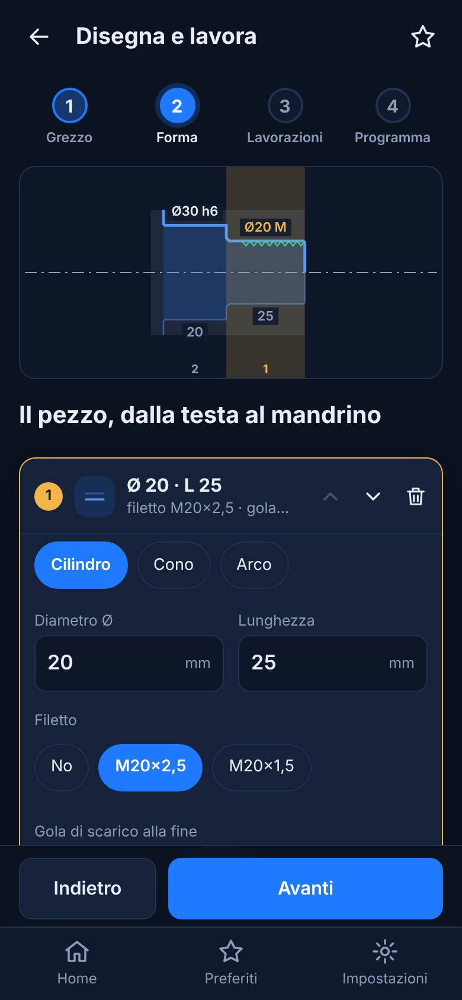
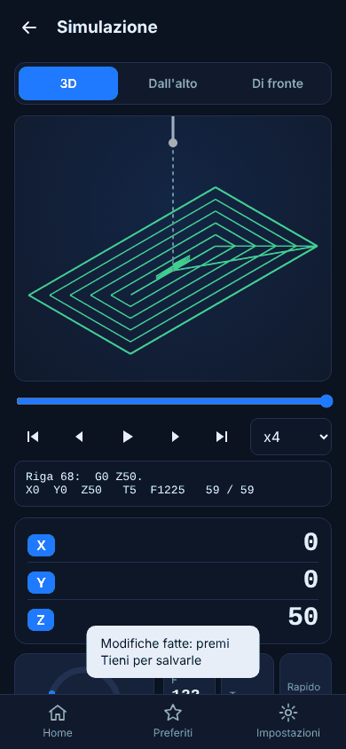
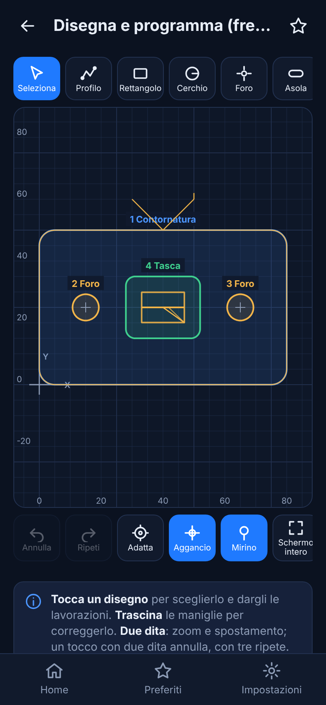
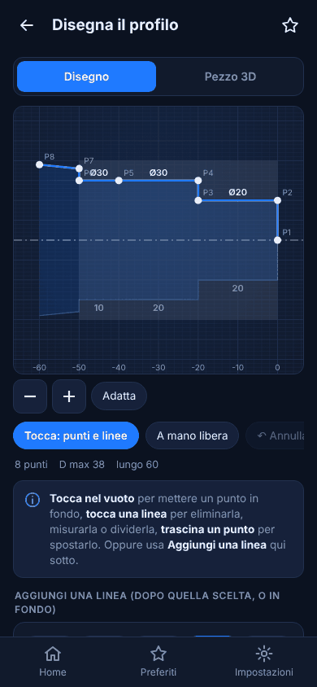
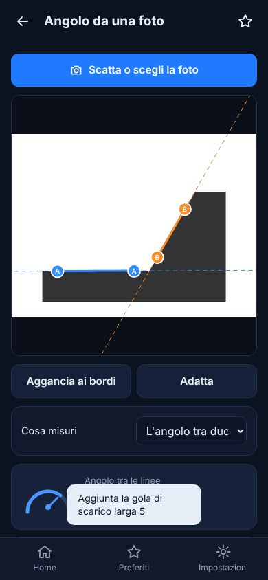
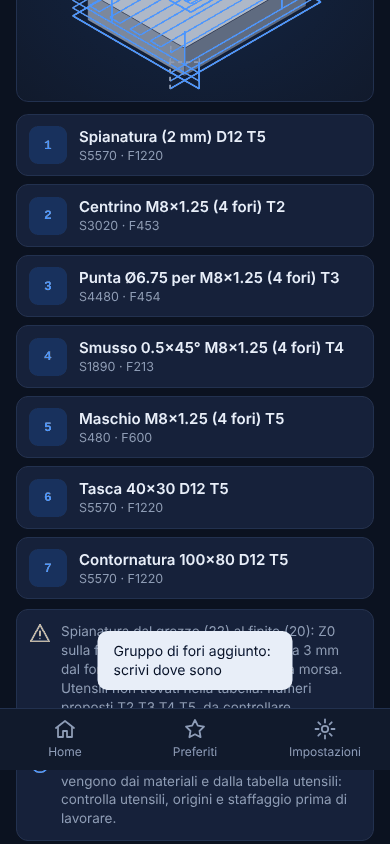

Per fresatori e tornitori
Calcoli e programmi CNC, in tasca.
Calcoli di taglio, programmi ISO di fresa e tornio, macro, simulazione e controllo degli errori. Sul telefono, anche senza rete.
Apri l'app Scarica l'APK Android
Nessun account, nessuna pubblicita, i dati restano sul telefono.

Cosa fa
Programmi di fresa, foratura e tornio
Spianatura, tasche, profili con G41/G42, fori con tutti i cicli, filetti, troncatura e cicli fissi. Piu lavorazioni in un programma, nell'ordine di officina.
Controllo e simulazione
Trova gli errori riga per riga, anche da una foto dello schermo. Simulazione animata con quote, giri, centro fresa e urti con le staffe.
Dalla foto del disegno al pezzo
L'app legge le quote e dove stanno sul disegno, le numera sulla foto e tu le confermi una per una: diventano il pezzo e il programma.
Disegna e lavora in 4 passi
Grezzo, forma a quote con il tastierino grande, lavorazioni proposte dalle regole di officina, programma con tempo e utensili. Uguale per fresa e tornio.
Mini CAD/CAM per fresa e tornio
Disegni col dito, a schermo intero e girando il telefono: profili, fori, tasche, asole, filetti e gole. A ogni disegno dai la lavorazione e l'app scrive il programma e lo simula.
Ciclo di lavoro proposto
Dal pezzo, o dalle quote di un disegno, alla lavorazione completa con utensili e dati di taglio.
Dati di taglio e tabelle
Giri e avanzamenti per utensile e materiale, tolleranze ISO, codici G e M e la tabella dei filetti: metrici, pollici, gas, NPT, trapezi, Whitworth e altri.
Macro, pezzi, attrezzaggio
Modelli di macro con simulazione, fogli di attrezzaggio da stampare, foto e controllo delle misure.
Le schermate







Come si installa
Dal browser
- Apri l'app dal browser del telefono.
- Dal menu scegli "Installa app" (o "Aggiungi a schermata Home").
- Dopo la prima apertura funziona anche senza rete.
App Android (APK)
- Scarica il file con il pulsante qui sopra.
- Aprilo e consenti l'installazione da quella fonte.
- Aggiunge la lettura delle foto, l'invio alla macchina e il salvataggio dei file.
Gli aggiornamenti si installano sopra la versione vecchia e i dati restano. Prima di aggiornare fai la copia di sicurezza dall'app (Impostazioni).
Domande frequenti
Funziona senza internet?
Si. Dopo la prima apertura l'app funziona senza rete. La rete serve solo per mandare un programma alla macchina o condividere un file.
Dove vanno i miei dati?
Restano sul tuo telefono. Non c'e un account, non c'e pubblicita e non c'e nessun tracciamento. Per non perderli, fai ogni tanto la copia di sicurezza dall'app.
Quanto sono affidabili i valori di taglio?
Sono valori di partenza per utensili in metallo duro. Vanno adattati a macchina, fissaggio e utensile, e ogni programma va provato a vuoto. Puoi sostituirli con i tuoi.
Posso mandare il programma alla macchina?
Con l'app Android si invia via FTP alla macchina, nella stessa rete. In alternativa copi il programma, lo salvi come file o lo condividi.
Per quali macchine fa i programmi?
Per fresa a tre assi e tornio, in ISO, con due altri linguaggi di controllo. Nessun linguaggio e stato provato su una macchina vera: prova sempre a vuoto la prima volta.
Serve installare qualcosa?
No: si apre dal browser e si puo aggiungere alla schermata Home. Per la lettura delle foto e l'invio alla macchina serve l'app Android (APK).
Da sapere: i valori di taglio e i programmi sono di partenza e indicativi. La responsabilita di quello che si lavora e di chi usa il programma. Leggi anche la guida e l'informativa sulla privacy.